정보처리산업기사 (2003-05-25 기출문제)
1과목: 데이터 베이스
1. 선형 리스트의 특징이 아닌 것은?
- 가장 간단한 데이터 구조 중 하나이다.
- 배열과 같이 연속되는 기억장소에 저장되는 리스트를 말한다.
- 기억 장소 효율을 나타내는 메모리 밀도가 1이다.
- 데이터 항목을 추가 삭제하는 것이 용이하다.
(정답률: 54%)

2. E-R 모델에 대한 설명으로 옳지 않은 것은?
- 개체 타입과 이들 간의 관계 타입을 이용해서 현실 세계를 개념적으로 표현하는 방법이다.
- 관계타입을 표현하는 방법은 그 관계타입의 이름과 함께 연관된 개체 타입들을 링크로 연결한다.
- 관계 타입의 차원은 관계 타입과 관련된 엔티티 타입의 개수이다.
- 관계 인스턴스는 다른 엔티티 타입에 속한 엔티티 사이의 관계를 표현한다.
(정답률: 35%)
3. SQL의 기술이 옳지 않은 것은?
- SELECT....FROM ....WHERE....
- INSERT....INTO....VALUES....
- UPDATE....TO....WHERE....
- DELETE....FROM....WHERE....
(정답률: 82%)
4. 정렬 알고리즘 선택시 고려하여야 할 사항으로 거리가 먼 것은?
- 데이터의 양
- 초기 데이터의 배열상태
- 키 값들의 분포상태
- 운영체제의 종류
(정답률: 80%)
5. 데이터베이스 관리자(DBA)의 역할과 거리가 먼 것은?
- 저장구조와 접근 방법 선정
- 데이터베이스의 무결성 유지
- 응용프로그램과 데이터의 중재
- 보안 정책 수립
(정답률: 64%)
6. AVL 트리의 가장 큰 장점은?
- 탐색시간이 빠르다.
- 기억장소에서 공간이 절약된다.
- 트리에서 노드를 삽입하기가 쉽다.
- 트리에서 노드를 삭제하기가 쉽다.
(정답률: 59%)
7. 다음 그래프 중 보기의 신장트리(spanning tree)가 아닌 것은?
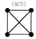
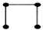
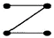
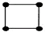
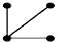
(정답률: 52%)
8. 다음 관계 대수 문장의 의미는?
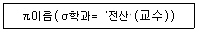
- 전산학과 교수들의 이름을 검색하시오.
- 전산학과 교수들의 이름 테이블을 삭제하시오.
- 전산학과 교수들의 이름을 삭제하시오.
- 전산학과 교수들의 이름을 삽입하시오.
(정답률: 76%)
9. 다음의 질의를 SQL 문으로 가장 잘 변환한 것은?
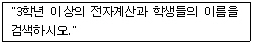
- SELECT * FROM 학생 WHEN 학년>=3 AND 학과="전자계산"
- SELECT 이름 FROM 학생 WHERE 학년>=3 OR 학과="전자계산"
- SELECT * FROM 학생 FOR 학년>=3 AND 학과="전자계산"
- SELECT 이름 FROM 학생 WHERE 학년>=3 AND 학과="전자계산"
(정답률: 74%)
10. 산술식 A/B-(C*D)/E를 Postfix 표기법으로 나타낸 것은?
- AB/CD*E/-
- AB/-CD*E/
- -/AB/*CDE
- A/B-C*D/E
(정답률: 59%)
11. 다음 영문의 ( ) 안에 적합한 단어는?
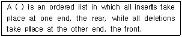
- stack
- queue
- graph
- tree
(정답률: 72%)
12. 학생(STUDENT) 테이블에 컴퓨터정보과 학생 120명, 인터넷정보과 학생 160명, 사무자동화과 학생 80명에 관한 데이터가 있다고 했을 때, 다음에 주어지는 SQL문 (ㄱ), (ㄴ), (ㄷ)을 각각 실행시키면, 결과 튜플 수는 각각 몇 개인가? (단, DEPT는 학과 컬럼명임)
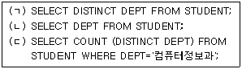
- (ㄱ) 3 (ㄴ) 360 (ㄷ) 1
- (ㄱ) 360 (ㄴ) 3 (ㄷ) 120
- (ㄱ) 3 (ㄴ) 360 (ㄷ) 120
- (ㄱ) 360 (ㄴ) 3 (ㄷ) 1
(정답률: 42%)
13. 데이터베이스 설계 단계 중 논리적 설계 단계에 해당하는 것은?
- 데이터 및 처리 요구 조건을 설계한다.
- 트랜잭션을 모델링한다.
- 목표 DBMS에 맞는 스키마를 설계한다.
- 트랜잭션의 세부 설계를 한다.
(정답률: 38%)
14. Which of the following is a language that allow users to create new database and specific their schema?
- Data definition language
- Data manipulation language
- Query language
- Data control language
(정답률: 65%)
15. 사용자나 응용프로그래머가 각 개인의 입장에서 필요로 하는 데이터베이스의 논리적 구조를 나타내는 것은?
- 외부스키마
- 개념스키마
- 내부스키마
- 처리스키마
(정답률: 59%)
16. 관계 데이터베이스에 적용할 순수 관계 연산자로 거리가 먼 것은?
- 링크(Link)
- 셀렉트(Select)
- 디비전(Division)
- 프로젝트(Project)
(정답률: 60%)
17. 데이터베이스의 설계순서를 바르게 나열한 것은?
- 요구조건 분석-물리적 설계-논리적 설계-개념적 설계
- 요구조건 분석-논리적 설계-개념적 설계-물리적 설계
- 요구조건 분석-개념적 설계-논리적 설계-물리적 설계
- 요구조건 분석-논리적 설계-물리적 설계-개념적 설계
(정답률: 80%)
18. B-트리에 대한 설명이 아닌 것은?
- 루트와 리프(leaf)를 제외한 모든 노드는 최소 [m/2], 최대 m개의 서브트리를 갖는다.
- 순차 탐색은 각 노드를 중위 순회함으로써 좋은 성능을 발휘하지 못한다.
- 인덱스 세트를 통한 직접 처리와 순차세트를 이용한 순차처리로 수행함으로서 효율적이다.
- 삽입과 삭제를 하여도 데이터 구조의 균형을 유지해야 한다.
(정답률: 26%)
19. 아래의 그림에서 속성(Attribute)의 개수는?
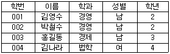
- 2
- 3
- 4
- 5
(정답률: 84%)
20. 하나 또는 둘 이상의 기본 테이블로부터 유도되어 만들어진 가상 테이블을 무엇이라고 하는가?
- 뷰(View)
- 도메인(Domain)
- 튜플(Tuple)
- 릴레이션(Relation)
(정답률: 91%)
2과목: 전자 계산기 구조
21. 정수 표현에서 음수를 나타내는데 부호화된 2의 보수법이 1의 보수법에 비해 장점은?
- 산술 연산 속도가 빠른 점과 양수 표현이 좋다.
- 2의 보수에서는 carry가 발생하면 무시한다.
- 양수 표현이 유리하다.
- 보수 취하기가 쉽다.
(정답률: 46%)
22. 데이터를 수집하고 그것을 계산 처리용으로 변환하여 계산을 실행 한 후 그 결과를 사용자에게 알려주는데 요하는 시간을 나타내는 것은?
- idle time
- process time
- turnaround time
- perfect time
(정답률: 51%)
23. 연산자의 기능에 해당하지 않는 것은?
- 함수연산 기능
- 기억 기능
- 제어 기능
- 입·출력 기능
(정답률: 44%)
24. 데이터 연산시 스택(stack)만을 사용하는 인스트럭션은?
- zero-address
- one-address
- two-address
- three-address
(정답률: 66%)
25. 다음 중에서 주 기억 장치는?
- 컴퓨터의 RAM
- 컴퓨터의 C 드라이브
- 컴퓨터의 A 드라이브
- 컴퓨터의 CD 드라이브
(정답률: 68%)
26. BCD 코드를 사용할 때 십진수의 각 자리 값은 어떤 코드에 해당하는가?
- 8421 코드
- 2421 코드
- Gray 코드
- Excess-3 코드
(정답률: 62%)
27. 소프트웨어적으로 우선순위가 높은 인터럽트를 알아내는 방법은?
- 점프(jump)
- 폴링(polling)
- 인터럽트 벡터
- 데이지 체인(daisy chain)
(정답률: 64%)
28. 기억장치와 입출력장치의 동작상 차이 중 가장 중요시되는 것은?
- 정보의 단위
- 동작의 자율성
- 착오의 발생율
- 동작의 속도
(정답률: 65%)
29. 742‘1’코드 표현에 의한 십진수 6의 값은?
- 0110
- 1100
- 1001
- 1011
(정답률: 42%)
30. 마이크로프로그램(micro program)에 대한 설명 중 옳지 않은 것은?
- 마이크로프로그램은 보통 RAM에 저장한다.
- 마이크로프로그램은 각종 제어신호를 발생시킨다.
- 마이크로프로그램은 마이크로 명령으로 형성되어 있다.
- 마이크로프로그램은 CPU내의 제어장치를 설계하는 프로그램이다.
(정답률: 56%)
31. 데이터 대량전송(burst transfer)및 사이클 스틸링(cycle stealing)과 관계있는 것은?
- DMA에 의한 전송
- 벡터 인터럽트에 의한 전송
- 프로그램된 I/O 데이터 전송
- 비벡터 인터럽트에 의한 전송
(정답률: 44%)
32. 인스트럭션(instruction)의 수행 과정이 아닌 것은?
- 주소 변환
- 명령 인출
- 오퍼랜드 인출
- 사이클 실행
(정답률: 25%)
33. 10진수 456을 BCD 코드로 변환한 것은?
- 0101 1101 0110
- 0100 0101 0110
- 1101 1011 0111
- 0100 0110 0101
(정답률: 75%)
34. 어떤 컴퓨터의 기억장치 용량이 4096워드이다. 각 32비트라고 하면 MAR(Memory Address Register)와 MBR(Memory Buffer Register)의 각 구성 비트 수는?
- MAR:12, MBR:32
- MAR:5, MBR:12
- MAR:12, MBR:5
- MAR:32, MBR:12
(정답률: 51%)
35. EBCDIC로 10진 숫자 5를 표현한다면?
- 11101010
- 11110101
- 00000101
- 00100101
(정답률: 35%)
36. CPU의 명령을 받고 입·출력 조작을 개시하면 CPU와는 독립적으로 조작을 하는 것은?
- Register
- Channel
- Terminal
- Buffer
(정답률: 57%)
37. 원시 프로그램을 컴파일러에 의해 번역하면 목적 프로그램이 생성되는데 이 목적 프로그램은 즉시 실행할 수 없는 상태의 기계어이다. 이를 실행 가능한 로드 모듈(Load Module)로 변환하는 것을 무엇이라 하는가?
- Linkage Editor
- Interpreter
- Compiler
- Assembler
(정답률: 28%)
38. 기억된 정보의 일부분을 이용하여 원하는 정보가 기억된 위치를 알아낸 후 그 위치에서 나머지 정보에 접근하는 기억장치를 무엇이라 하는가?
- Cache memory
- Associative memory
- Virtual memory
- Main memory
(정답률: 67%)
39. Addressing 방법이 아닌 것은?
- temporary addressing
- direct addressing
- immediate addressing
- index addressing
(정답률: 64%)
40. Computer system에 예기치 않은 일이 발생했을 때 제어 프로그램에게 알려주는 것을 무엇이라 하는가?
- Interrupt
- Program library
- PSW(Program Status Word)
- Problem state(처리 프로그램 상태)
(정답률: 71%)
3과목: 시스템분석설계
41. 순차파일(sequential file)의 특징으로 거리가 먼 것은?
- 처리하는데 불편이 많아 이용도가 낮다.
- 데이터의 수록이 다른 파일에 비하여 어렵다.
- 데이터 검색시 시간이 많이 걸린다.
- 파일의 내용을 추가, 변경, 삭제하기가 매우 편리하다.
(정답률: 60%)
42. 소프트웨어 수명주기 모형 중 실제 상황이 나오기 전에 가상으로 시뮬레이션을 통하여 최종 결과물에 대한 예측이 가능한 모형은?
- 프로토타이핑 모형
- 코딩과 수정 모형
- 폭포수 모형
- 점증적 모형
(정답률: 66%)
43. 컴퓨터로 처리할 데이터의 개수와 컴퓨터로 처리한 데이터의 개수가 같은지의 여부를 검사하는 체크 방법은?
- blank check
- total check
- data count check
- mode check
(정답률: 57%)
44. 두 모듈이 하나의 기억 장소에 공통의 데이터 영역을 설정하여 그 기억 장소에 데이터를 전달하면 다른 모듈이 그 기억 장소를 조회함으로써 정보를 전달하는 방식을 취할 때의 결합도는?
- 제어 결합도
- 스탬프 결합도
- 공통 결합도
- 내용 결합도
(정답률: 50%)
45. 일정 시간 동안 수집된 변동 자료를 컴퓨터의 입력 자료로 만들었다가 필요한 시점에서 이 자료들을 입력하여 실행한 후 그 결과를 출력시켜 주는 방식의 시스템은?
- 일괄 처리 시스템
- 실시간 시스템
- 시분할 시스템
- 온라인 시스템
(정답률: 70%)
46. 동일한 파일 형식을 가지고 있는 두 개 이상의 파일을 하나로 순서 정리하는 처리 패턴은?
- 병합
- 정렬
- 생성
- 조합
(정답률: 66%)
47. 컴퓨터 처리 단계에서의 체크 중 계산 처리 단계에서의 체크 항목에 해당하는 것은?
- 균형 체크(balance check)
- 불일치 레코드 체크(unmatched record check)
- 검사 자리 체크(check digit check)
- 범위 체크(limit check)
(정답률: 34%)
48. 객체 지향 분석에서 불필요한 부분을 생략하고 객체의 속성 중 가장 중요한 것에만 중점을 두어 개략화 시킨 것을 무엇이라고 하는가?
- 상속성
- 클래스
- 추상화
- 메시지
(정답률: 60%)
49. 아래와 같은 조건으로 체크디지트(check digit)를 구할 때 코드값 '83294'는 체크디지트를 포함해서 어떻게 되겠는가?(오류 신고가 접수된 문제입니다. 반드시 정답과 해설을 확인하시기 바랍니다.)
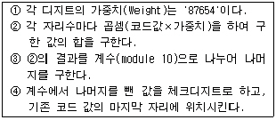
- 832948
- 832947
- 832942
- 832944
(정답률: 32%)
50. 코드의 기능과 거리가 먼 것은?
- 식별 기능
- 분류 기능
- 배열 기능
- 암호 기능
(정답률: 59%)
51. 출력 설계 순서가 옳은 것은?
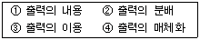
- ①-④-②-③
- ④-②-③-①
- ②-③-①-④
- ③-①-④-②
(정답률: 69%)
52. 색인 순차 파일(Indexed Sequential File)의 색인 구역이 아닌 것은?
- Master Index
- Data Index
- Cylinder Index
- Track Index
(정답률: 63%)
53. 클래스 내에 속하는 객체들이 가지고 있는 데이터의 값(value)들을 단위별로 정의하는 것으로서 성질, 분류, 식별, 수량 또는 상태 등을 표현한 것은?
- 메시지
- 추상화
- 속성
- 객체
(정답률: 65%)
54. 입/출력 파일 설계시 색인 순차편성 파일 구성에서 새로이 추가되는 레코드가 많아서 기본 데이터 구역내에 더 이상 기록할 수 없을 때, 오버플로우된 레코드를 기록하는 구역은?
- 트랙 오버플로우 구역
- 기본 데이터 구역
- 실린더 인덱스 구역
- 실린더 오버플로우 구역
(정답률: 50%)
55. 회사에서 각 부서의 명칭을 코드화하기 위하여 대분류, 중분류, 소분류 등으로 나누어 나타내고자 한다. 이 때 가장 적합한 코드의 종류는?
- 구분코드(block code)
- 그룹분류코드(group classification code)
- 연상기호코드(mnemonic code)
- 순차코드(sequence code)
(정답률: 79%)
56. 자료 흐름도(data flow diagram)의 구성요소에 해당되지 않는 것은?
- 프로세스
- 자료발생지
- 자료 저장소
- 자료사전
(정답률: 48%)
57. 다음의 입력 설계 단계 중 제일 먼저 행해지는 것은?
- 입력정보 투입 설계
- 입력정보 매체화설계
- 입력정보 수집설계
- 입력정보 발생단계
(정답률: 70%)
58. 시스템 개발 단계 중 가장 많은 비용이 투입되는 단계는?
- 테스트 단계
- 유지보수 단계
- 분석 및 설계 단계
- 구현 단계
(정답률: 64%)
59. 시스템 개발 중 문서화(documentation)에 대한 설명으로 거리가 먼 것은?
- 프로그램 내용을 보기에 앞서 문서를 통하여 시스템에 대해 쉽게 이해할 수 있다.
- 시스템 개발자 이외의 사람에게 쉽게 시스템을 이해시킬 수 있다.
- 문서가 없으면 시스템의 유지 보수가 매우 어렵다.
- 개발자 입장에서는 문서가 필요 없지만 사용자 입장에서는 반드시 문서가 필요하다.
(정답률: 62%)
60. HIPO 패키지의 3단계 도표에 해당하지 않는 것은?
- visual table of contents
- entity diagram
- overview diagram
- detail diagram
(정답률: 29%)
4과목: 운영체제
61. 프로세스의 스케줄링 방법 중 비선점 방식이 아닌 것은?
- FCFS(First Come First Service)
- SJF(Shortest Job First)
- HRN(Highest Response ratio Next)
- RR(Round-Robin)
(정답률: 59%)
62. 천재지변이나 사고로 인해 정보의 손실이나 파괴를 막기 위해 취할 수 있는 방법으로 가장 올바른 것은?
- 파일 시스템을 체계적으로 잘 정리한다.
- 백업(Back-up)을 주기적으로 실시하여 안전한 곳에 보관한다.
- 컴퓨터에 안전장치를 하고, 필요할 때만 조심해서 사용해야 한다.
- 사고는 컴퓨터가 가동될 때만 발생함으로 사용 후에는 컴퓨터 전원을 반드시 꺼놓는다.
(정답률: 74%)
63. 현재 헤드의 위치가 50 에 있고 트랙 0번 방향으로 이동하며, 요청 대기 열에는 다음과 같은 순서로 들어 있다고 가정할 때, SCAN 스케줄링 알고리즘에 의한 헤드의 총 이동거리는 얼마인가?
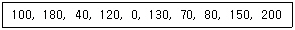
- 790
- 380
- 370
- 250
(정답률: 34%)
64. UNIX에서 백그라운드 처리를 하기 위하여 명령어의 마지막에 입력하는 것은?
- |
- []
- >>
- &
(정답률: 55%)
65. UNIX에서 파일시스템의 inode를 구성하는 정보에 해당하지 않는 것은?
- 파일의 소유자
- 보호 비트
- 파일 생성 시간
- 파일이 최초로 수정된 시간
(정답률: 57%)
66. 분산처리 시스템에서 버스(bus)구조에 대한 설명으로 옳지 않은 것은?
- 노드의 추가와 삭제가 용이하다.
- 통신 회선의 길이에 제한이 있다.
- 통신회선이 1개이므로 물리적 구조가 간단하다.
- 노드에 고장이 발생하면 전체에 영향을 미치므로 신뢰성이 낮다.
(정답률: 54%)
67. 시간 할당량(Quantum)과 가장 관련 깊은 작업 스케줄링 방식은?
- Round-robin
- SJF
- FIFO
- HRN
(정답률: 63%)
68. 운영체제에 대한 설명으로 옳지 않은 것은?
- 사용자가 컴퓨터를 손쉽게 사용할 수 있는 환경을 제공한다.
- 한 가지 기종의 시스템에 전문적인 기능을 가지도록 설계되어야 한다.
- 시스템 사용 도중 발생하는 내부, 외부적인 오류로부터 시스템을 보호한다.
- 응용 프로그램들이 컴퓨터의 제한된 자원들을 공유할 수 있도록 자원을 관리한다.
(정답률: 67%)
69. 프로그램이 실행되는 과정에서 발생하는 기억 장치 참조는 하나의 순간에는 아주 지역적인 일부 영역에 대하여 집중적으로 이루어진다는 성질을 의미하는 것은?
- monitor
- thrashing
- locality
- working set
(정답률: 63%)
70. 입출력 수행, 기억 장치 할당, 오퍼레이터와의 대화를 위해 발생하는 인터럽트는?
- SVC 인터럽트
- 입/출력 인터럽트
- 외부 인터럽트
- 프로그램 검사 인터럽트
(정답률: 35%)
71. 교착 상태 발생의 필수 조건이 아닌 것은?
- Synchronization
- Circular Wait
- Hold And Wait
- Mutual Exclusion
(정답률: 63%)
72. 실행시간 추정과 선점 기능 때문에 스케쥴러가 복잡해지고, 남은 계산 시간들을 저장해 놓아야 하는 단점을 보완하였으며, 서비스 시간과 대기 시간의 비율을 고려하는 프로세스 스케줄링 기법은?
- SJF
- SRT
- HRN
- FIFO
(정답률: 59%)
73. 다중 프로그래밍 운영체제에서 한 순간에 여러 개의 프로세스에 의하여 공유되는 데이터 및 자원에 대하여, 한 순간에는 반드시 하나의 프로세스에 의해서만 자원 또는 데이터가 사용되도록 하고, 이러한 자원이 프로세스에 의하여 반납된 후, 비로소 다른 프로세스에서 자원을 이용하거나 데이터를 접근할 수 있도록 지정된 영역을 의미하는 것은?
- locality
- semaphore
- critical section
- working set
(정답률: 48%)
74. 공간 구역성(Spatial Locality)의 사용 경우로 적합하지 않은 것은?
- 카운팅(Counting), 집계(Totaling)에 사용되는 변수
- 순차적 코드(Sequential Code) 실행
- 배열 순회(Array Traversal)
- 같은 영역에 있는 변수를 참조할 때 사용
(정답률: 41%)
75. 빈번한 페이지의 부재 발생으로 프로세스의 수행 소요시간보다 페이지 교환에 소요되는 시간이 더 큰 경우를 의미하는 것은?
- 스레싱(thrashing)
- 세마포어(semaphore)
- 페이징(paging)
- 오버레이(overlay)
(정답률: 63%)
76. 분산처리 시스템의 성형구조에 대한 설명으로 옳지 않은 것은?
- 자체가 단순하고 제어가 집중되어 모든 작동이 중앙 컴퓨터에 의해 감시되므로 하나의 제어기로 조절이 가능하다.
- 집중제어로 보수와 관리가 용이하다.
- 중앙 컴퓨터 고장시 전체 네트워크에는 영향을 주지 않는다.
- 한 노드의 고장이 다른 노드에 영향을 주지 않는다.
(정답률: 65%)
77. 스풀링과 버퍼링에 대한 설명으로 옳지 않은 것은?
- 버퍼링은 CPU와 I/O 장치를 항상 바쁘게 하여 I/O 장치의 느린 속도를 보완하는 방법이다.
- 버퍼링은 한 작업에 대해 계산과 입출력을 동시에 수행한다.
- 스풀링은 서로 다른 여러 작업에 대하여 계산과 입/출력을 동시에 수행한다.
- 스풀링은 주기억 장치의 일부를 버퍼로 사용하는 반면에, 버퍼링은 디스크의 일부를 매우 큰 버퍼처럼 사용한다.
(정답률: 44%)
78. 디스크 탐색시간 최적화 전략 중 C-SCAN 스케줄링 전략에 대한 설명으로 가장 적합한 것은?
- 현재 헤드의 위치에서 가장 가까운 I/O요청을 서비스한다.
- 헤드가 디스크 표면을 양방향(안쪽/바깥쪽)으로 이동하면서 이동하는 동선의 I/O 요청을 서비스한다. 이 때, 헤드는 이동하는 동선의 앞쪽에 I/O 요청이 없을 경우에만 후퇴가 가능하다.
- 헤드는 트랙의 안쪽으로, 한 방향으로만 움직이며 안쪽에 더 이상 I/O 요청이 없으면 다시 바깥쪽에서 안쪽으로 이동하면서 I/O 요청을 서비스한다.
- 먼저 도착한 I/O 요청을 먼저 서비스한다.
(정답률: 53%)
79. 파일 보호 기법 중에서 각 파일에 판독 암호와 기록 암호를 부여하여 제한된 사용자에게만 접근을 허용하는 기법은?
- 파일의 명명(Naming)
- 비밀번호(Password)
- 접근제어(Access control)
- 암호화(Cryptography)
(정답률: 44%)
80. 그림과 같이 저장장치가 배치되어 있을 때, 13k의 작업이 공간의 할당을 요구한다면, 최초 적합(First-Fit) 전략을 사용할 때, 어느 주소에 배치되는가?
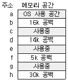
- b
- d
- f
- h
(정답률: 58%)
5과목: 정보통신개론
81. ITU-T의 표준 시리즈 중에서 전화망을 통한 데이터 전송을 규정한 것은?
- A 시리즈
- O 시리즈
- V 시리즈
- X 시리즈
(정답률: 57%)
82. 다음 ISDN 서비스 중 실제로 단말을 조작하고 통신하는 이용자측에서 본 서비스는?
- 텔리 서비스
- 베어러 서비스
- 부가 서비스
- D채널 비접속 서비스
(정답률: 30%)
83. 통신 프로토콜(Protocol)의 설명 중 가장 합당한 것은?
- 회선이 접속되어 있는 단말장치를 중앙의 컴퓨터가 제어하기 위한 프로그램
- 데이터의 오류나 정정을 검출하기 위한 에러제어 방식
- 컴퓨터 간 또는 단말기 간 에러 없이 효율적인 정보를 주고받기 위해 설정한 통신규칙
- 데이터의 동기방식을 결정하기 위한 데이터구성 모델
(정답률: 69%)
84. 다음 식은 잡음이 있는 통신채널의 경우 통신용량을 계산하는 식이다. 기호가 바르게 표현된 것은?
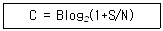
- C : 신호 전력
- B : 주파수 대역폭
- S : 잡음 전력
- N : 통신용량
(정답률: 49%)
85. 다음의 설명 내용에 해당되는 것은?
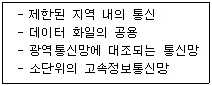
- VAN
- ISDN
- LAN
- PSTN
(정답률: 77%)
86. 다음 중 광섬유 케이블의 장점이 아닌 것은?
- 고속 대용량 전송이 가능하다.
- 가볍고 부식되지 않으므로 분기나 접속이 용이하다.
- 장거리 전송이 가능하다.
- 가볍고 내구성이 강하다.
(정답률: 58%)
87. 데이터의 충돌을 막기 위해 송신 데이터가 없을 때에만 데이터를 송신하고, 다른 장비가 송신중일 때에는 송신을 중단하며 일정시간 간격을 두고 대기하였다가 다시 송신하는 방식을 무엇이라 하는가?
- 토큰 순회버스
- 토큰 순회 링
- CSMA/CD
- CSMA/CA
(정답률: 62%)
88. 한 통신로를 이용하여 송신과 수신 중 한 가지 기능만으로 사용하되, 송· 수신 기능을 번갈아 사용하므로써 상호정보를 교환하는 방법은?
- 단방향(simplex) 통신
- 반단방향(half simplex) 통신
- 전이중방향(full duplex) 통신
- 반이중방향(half duplex) 통신
(정답률: 65%)
89. 디지털 변조 방식 중에서 전송속도를 높이기 위하여 위상과 진폭을 함께 변화시켜서 변조하는 방식은?
- ASK
- PSK
- FSK
- QAM
(정답률: 55%)
90. 뉴미디어인 CATV에 대한 설명으로서 옳지 않은 것은?
- 일반 지상파 TV 방송과 칼라색상 구조 및 주사방식이 서로 다르다.
- 다채널로서 방송뿐만 아니라 정보통신서비스가 가능하다.
- 원래 난시청 해소를 목적으로 설치했던 지역 공동 안테나 TV 방식이다.
- 전송로는 동축케이블이나 광섬유케이블을 사용한다.
(정답률: 43%)
91. ISDN 사용자-망 인터페이스에 대한 설명 중 틀린 것은?
- ISDN 사용자-망 인터페이스에는 기본 인터페이스와 1차 군속도 인터페이스가 있다.
- TDM을 이용해서 사용자 정보채널과 신호 정보채널을 구성한다.
- 2선식 선로에 전이중 전송을 위해서 시간적으로 양방향 신호를 제어하는 ECH 방식을 사용한다.
- D채널을 통해 소량의 사용자 데이터를 전송하는 기능을 제공한다.
(정답률: 38%)
92. 데이터와 정보의 진화과정을 가장 적합하게 순차적으로 나타낸 것은?
- 데이터(Data) - 정보(information) - 지식(Knowledge) - 지능(intelligence)
- 정보(information) - 데이터(Data) - 지식(Knowledge) - 지능(intelligence)
- 데이터(Data) - 정보(information) - 지능(intelligence) - 지식(Knowledge)
- 데이터(Data) - 지식(Knowledge) - 정보(information) - 지능(intelligence)
(정답률: 61%)
93. ISDN 채널 중 기본적인 이용자 채널로 PCM 화된 디지털 음성이나 회선교환 혹은 패킷교환 등에 이용되는 채널은?
- A채널
- B채널
- C채널
- D채널
(정답률: 44%)
94. 기간통신사업자의 회선을 임차하여 부가가치를 부여한 음성이나 데이터정보를 제공하여 주는 서비스의 집합체는?
- LAN
- VAN
- ISDN
- PSDN
(정답률: 66%)
95. 통신과 방송이 결합한 위성 멀티미디어 환경에서 가장 각광받을 것으로 기대되는 미래의 이동통신 서비스는?
- IMT-2000
- MPEG-4
- LE0
- BLUE-TOOTH
(정답률: 41%)
96. OSI 7계층 모델의 구조에 대한 설명으로 틀린 것은?
- 적절한 수의 계층을 두어 시스템의 복잡도를 최소화하였다.
- 서비스 접점의 경계를 두어 되도록 적은 상호작용이 되도록 하였다.
- 동일계층에 서로 다른 프로토콜을 두어 효율성을 높였다.
- 인접한 상하위 계층 간에는 인터페이스를 두었다.
(정답률: 45%)
97. 뉴미디어 분류에 속하지 않는 것은?
- 방송계 뉴미디어
- 통신계 뉴미디어
- 전파 통신 뉴미디어
- 패키지계 뉴미디어
(정답률: 45%)
98. 이동통신 시스템에서 주로 이용하는 CDMA의 뜻은?
- 셀룰러 이동전화 시스템이다.
- 핸드폰을 이용하는 부가가치 네트워크이다.
- 코드분할 다중접속방식을 말한다.
- 디지털 영상 정보통신 방식을 말한다.
(정답률: 58%)
99. 전산망 기기가 타인의 전산망 기기와 접속되는 경우에 그 설치와 보전에 관한 책임의 한계를 명확하게 구분하기 위한 것을 무엇이라 하는가?
- 구분점
- 한계점
- 분계점
- 경계점
(정답률: 37%)
100. 전화기의 구성부분 중 음성에너지를 전기적 에너지로 변환시켜주는 장치는?
- 수화기
- 다이얼
- 송화기
- 훅스윗치
(정답률: 51%)
선형 리스트는 배열과 같이 연속되는 기억장소에 저장되는 리스트를 말하며, 가장 간단한 데이터 구조 중 하나이다. 데이터 항목을 추가 삭제하는 것이 용이한 이유는 배열과 같이 인덱스를 이용하여 접근하기 때문이다. 즉, 추가나 삭제 시에도 인덱스를 조정하여 데이터를 삽입하거나 삭제할 수 있기 때문이다.